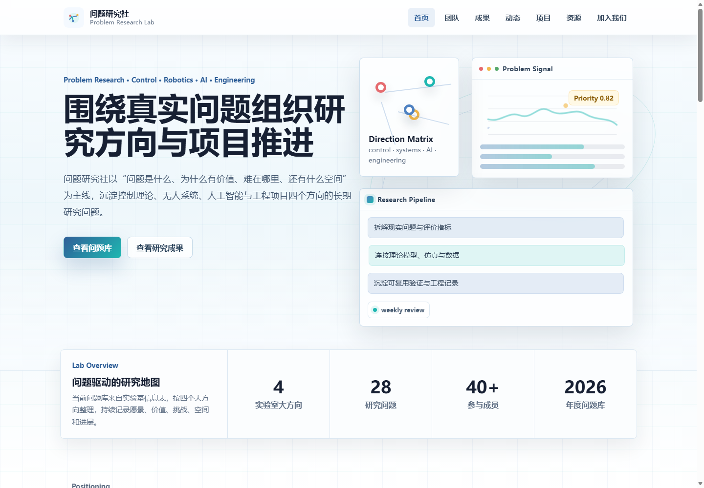
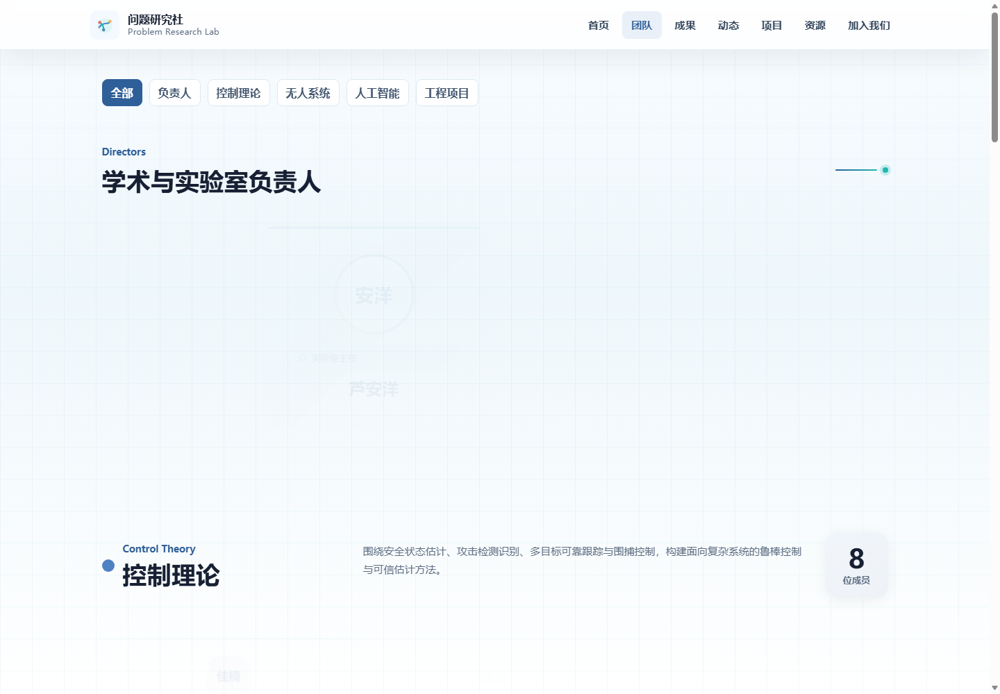
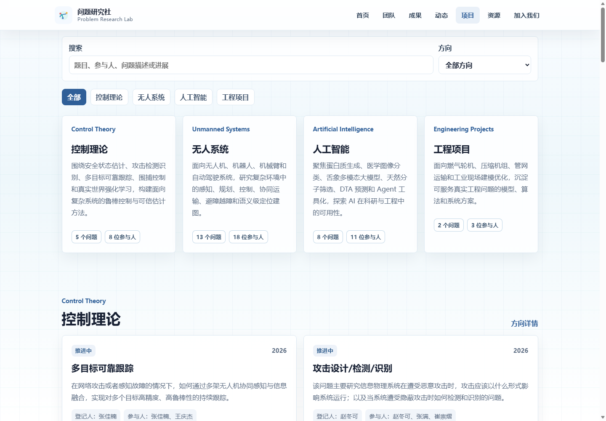
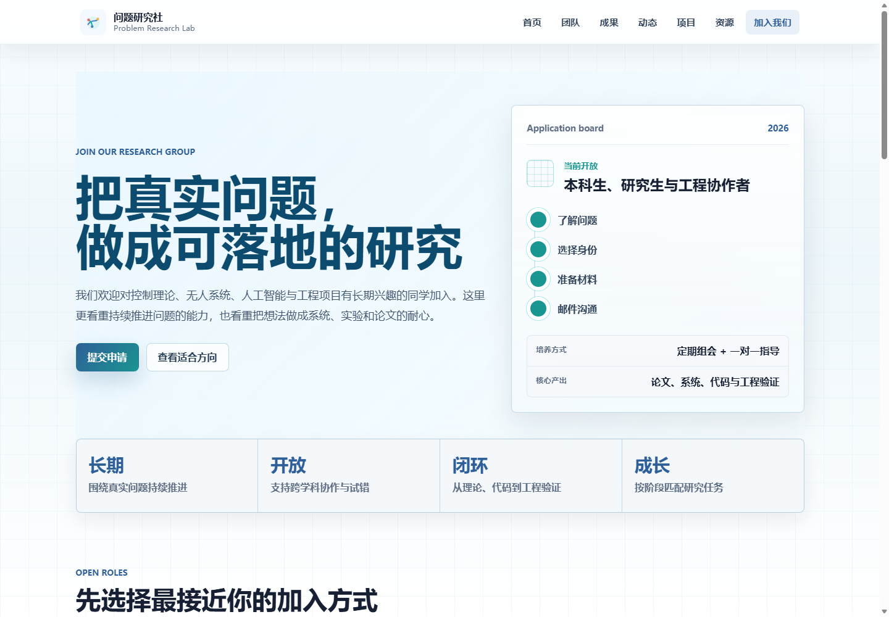
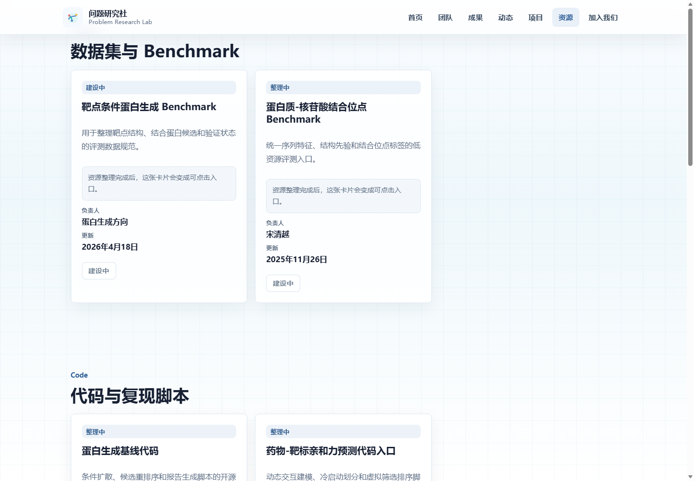

实验室官网从构建到上线
学术风格预览稿：用项目真实截图作为视觉证据，讲清楚从页面构建到部署访问的完整流程。
不是纯线条图，而是“截图 + 学术板块 + 实心流程”的报告风格。
先生成 5 页看效果：封面、网站定位、前端构建、部署流程、访问链路。
官网首先是一个学术入口
首页截图作为视觉背景，强调它不是单页展示，而是承载团队定位、研究方向和访问路径的入口。

从“做网页”转向“组织学术信息”
学术官网的重点不是堆视觉效果，而是让访问者快速理解团队、方向、成果和加入方式。
前端页面用组件和数据组织起来
团队页截图用于说明：页面不是写死文字，而是由统一数据源驱动列表、分类和详情。
页面负责展示，数据负责内容
`siteData.js` 集中管理全站内容，页面组件从数据中读取成员、论文、项目和资源。

从本地项目到 Vercel 部署
项目页截图作为背景证据，前景使用实心流程带说明构建与部署步骤，避免纯线条示意图。
关键配置
`vercel.json` 让所有路径返回 `index.html`，解决刷新二级页面 404。
为什么静态化
展示型官网没有登录和数据库，静态站成本更低、访问更快。
项目截图
背景素材来自真实项目页，可增强分享可信度。

Cloudflare 让访问入口更可控
加入页截图作为右侧视觉证据，前景说明：Vercel 负责部署，Cloudflare 负责 DNS、代理、缓存与访问入口。
严谨表述
这套方案能改善 Vercel 默认域名在国内访问不稳定的问题；如果未来追求强稳定，可继续升级为备案域名 + 国内 CDN。

技术栈不是重点，分工才是重点
组会分享时，把技术名词讲成“它在流程里解决什么问题”，比解释框架原理更容易让大家跟上。
一套轻量静态官网链路
这个项目不需要登录、数据库和后端接口，因此优先采用静态站架构：页面先在本地构建，再由部署平台发布，最后通过域名和 DNS 提供正式入口。

最核心的实现：内容与页面分离
`siteData.js` 是全站内容的统一来源。页面只关心如何展示，数据文件负责显示什么。
站点信息
实验室名称、英文名、邮箱、地点、导航入口。
研究内容
研究方向、问题库、项目详情和进展状态。
学术成果
论文列表、详情页、BibTeX 和资源入口。
页面结构按访问路径组织
一个第一次访问官网的人，应该能从“认识团队”自然走到“查看成果、理解项目、联系加入”。
主页面
负责快速扫描，告诉访问者这里有什么。
详情页
承接深入阅读，包括研究方向、论文和项目。
导航栏
全站固定入口，帮助用户随时切换信息层级。
Vite 把开发工程导出成静态文件
线上部署时，Vercel 发布的不是 `.vue` 源码，而是 Vite 构建后的 `dist/` 文件。
从工程到静态产物
本地开发阶段适合快速试错；构建阶段则把所有页面、样式和数据打包为浏览器可以直接加载的资源。
当前项目体量
JS 约 262 KB，CSS 约 60 KB，图片约 5.6 MB。对展示型网站来说，图片通常比代码更影响首屏体验。
Vercel 负责把静态文件发布到公网
它把构建、发布、HTTPS 和 CDN 分发变成自动流程，适合轻量展示型官网。
低运维
不需要自己租服务器、配置 Nginx 或手动申请证书。
自动化
后续更新可以通过提交代码触发重新构建和发布。
适配静态站
展示型官网的部署链路足够简单，成本也低。
部署中最典型的坑：刷新二级页面 404
前端路由里的 `/people` 看起来像真实路径，但服务器上并没有这个物理文件。
现象
从首页点击可以进入，刷新或直接打开二级路径时可能 404。
原因
服务器查找物理文件，浏览器里的 Vue Router 尚未接管。
解决
所有路径先返回 `index.html`，再由前端决定显示哪个页面。
关键配置
{ "rewrites": [{ "source": "/:path*", "destination": "/index.html" }] }
Cloudflare DNS 托管让正式域名可控
部署解决“网站放在哪里”，DNS 解决“用户输入域名后如何找到它”。
DNS 托管
把域名解析权交给 Cloudflare 统一管理。
代理缓存
请求先经过 Cloudflare，再回源到 Vercel。
正式入口
使用自定义域名，避免依赖默认 `vercel.app` 入口。
国内访问优化靠的是入口链路变化
用户访问自定义域名，由 Cloudflare 接管解析与代理，再回源到 Vercel 获取静态网站。
需要严谨表达
这套方案能改善 Vercel 默认域名在国内访问不稳定的问题；如果未来追求强稳定，仍可继续升级为备案域名 + 国内 CDN。
踩坑记录比代码更值得分享
这些问题来自真实上线链路，不是单个页面的实现细节。
这套方案的成本主要是域名
对实验室展示站来说，低运维成本比复杂架构更重要。
Vue / Vite
开源免费
Vercel
免费额度
Cloudflare
免费计划
域名
年费
服务器
无需单独购买
维护逻辑
内容更新走数据文件；页面更新走组件；上线更新走自动部署；访问入口走域名和 DNS。
现场演示只做四件事
演示目标是让听众理解流程，不要陷入具体代码细节。
回答时重点讲取舍
听众常问的不是某一行代码，而是为什么不用另一种方案。
为什么不用 WordPress？
当前更需要定制展示和低运行成本，后续可接 CMS。
为什么不用国内服务器？
国内服务器更稳，但备案、运维和证书成本更高。
Cloudflare 能保证国内访问吗？
不能绝对保证，但能改善默认域名不稳定；强稳定需国内 CDN。
以后怎么更新内容？
先集中维护数据文件，再逐步接 Excel 自动生成或后台。
把一个本地项目变成真正可对外使用的实验室官网
用轻量前端技术完成页面构建，用自动化平台完成部署，用 DNS 与代理服务打通访问链路。